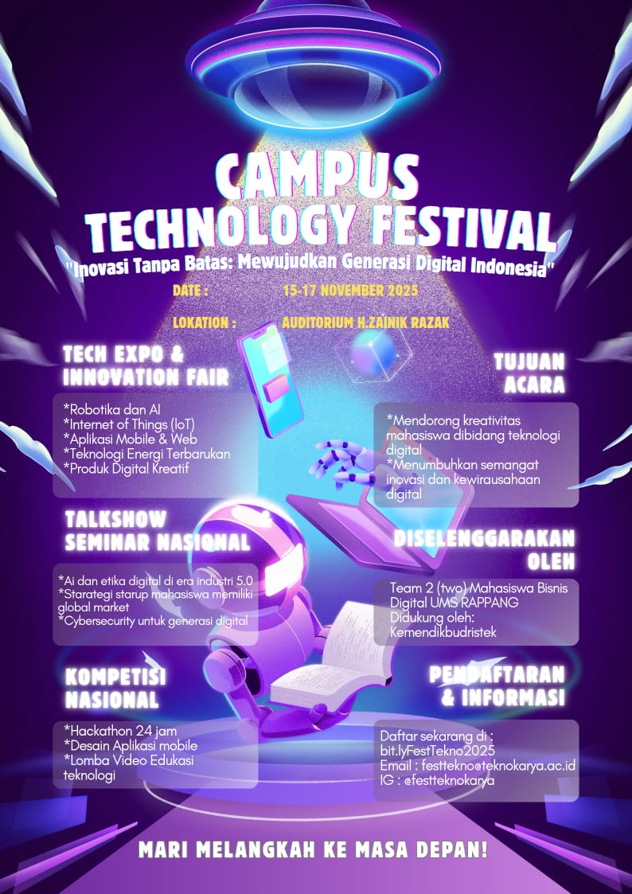

Campus Technology Festival
"inovasi tanpa batas mewujudkan generasi digital indonesia"

Campus Technology Festival adalah ajang tahunan yang mempertemukan mahasiswa, startup, komunitas teknologi, dan industri kreatif dalam satu wadah untuk berbagi inspirasi, inovasi, serta karya digital terbaik. selama 3 hari penuh, pengunjung dapat mengikuti seminar, workshop, kompetisi, pameran, hingga hiburan malam yang seru dan edukatif.
highlight acara
Tech expo & innovation fair
temukan karya mahasiswa dan startup lokal :
* robotika & AI
* internet of things
* aplikasi mobile & web
* teknologi energi terbarukan
* produl digital kreatif
talkshow & seminar nasional
topik unggulan
* AI dan etika di era industri 5.0
* strategi startup mahasiswa menuju glonal market
* Cybersecurity untuk generasi digital
pembicara :
* Ir.Dwi Santosa,M.Kom-CTO techID
* Anisa putri,S.Kom - CEO Startmart
* Prof.Dr.Bambang Hadi- guru besar informatika U.Teknokarya